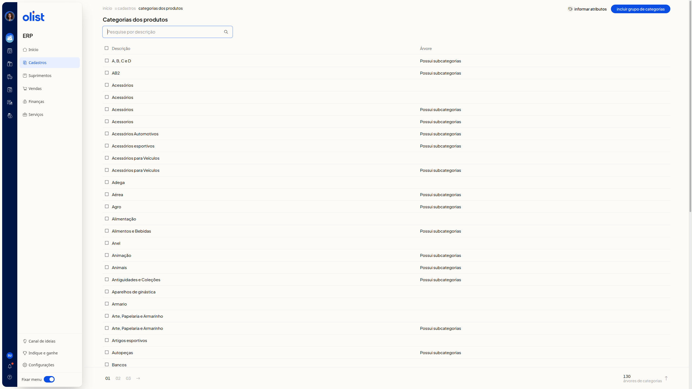
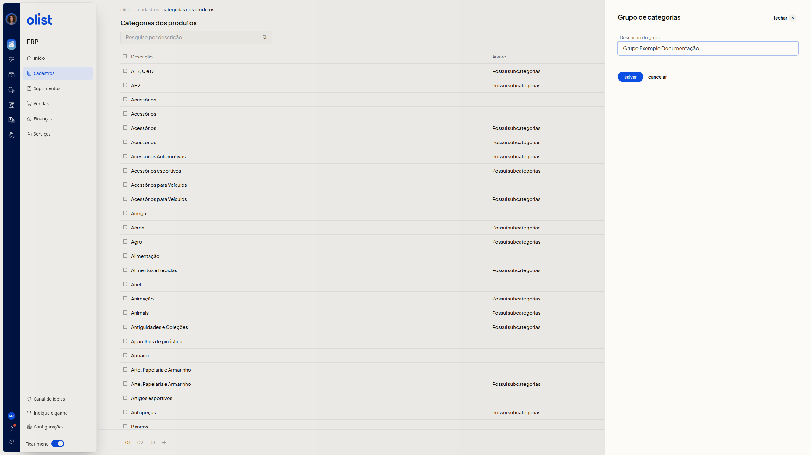
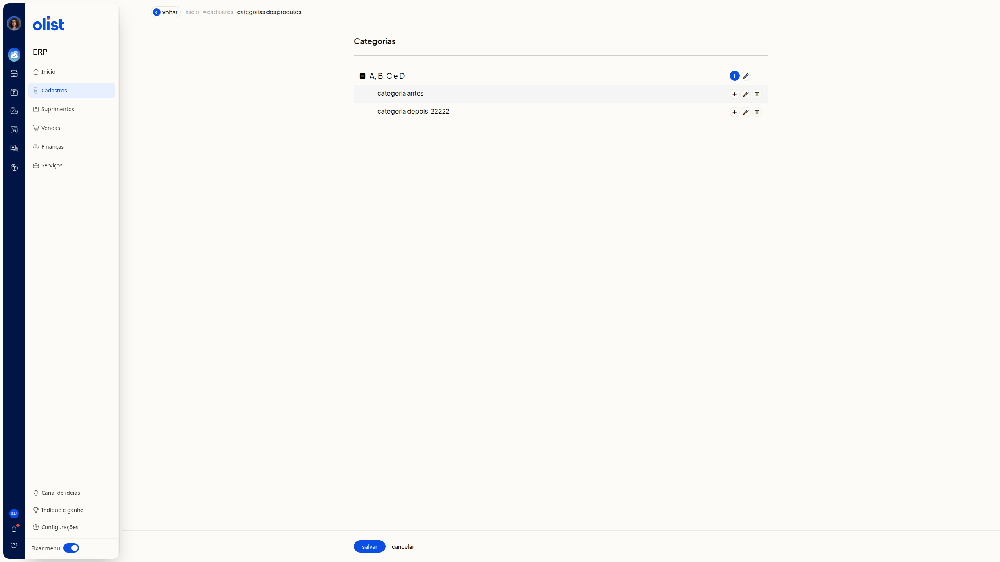
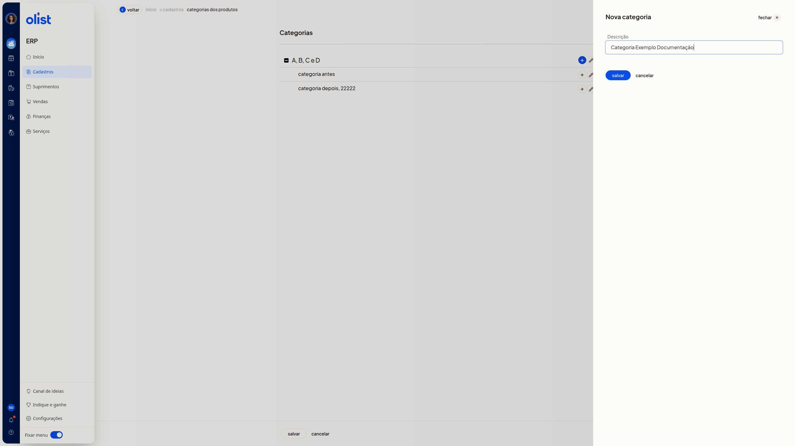
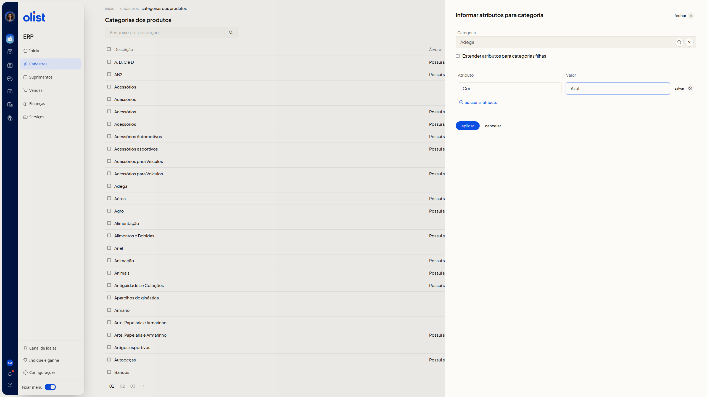

Categorias dos produtos
Descrição
No ERP da Olist, a página Categorias dos produtos lista os grupos de categorias. Você inclui um grupo, abre a árvore para incluir ou editar categorias e informa atributos de uma categoria já existente.
Acesse Cadastros > Categorias dos produtos.
Pré-requisitos
Para começar, confira:
- estar autenticado no ERP e na área de Cadastros
- ter a permissão de Categorias dos produtos
- para organizar a árvore, abrir um grupo que já apareça na listagem
- para informar atributos, escolher uma categoria existente
Instruções
Como consultar os grupos de categorias
- Acesse Cadastros > Categorias dos produtos.

- Preencha Pesquise por descrição para buscar um grupo pela descrição.
- Consulte as colunas Descrição e Árvore. Na coluna Árvore, o grupo pode exibir Possui subcategorias.
- Use a paginação quando houver mais grupos. A listagem mostra os grupos de categorias e os atalhos Incluir grupo de categorias e Informar atributos.
Como incluir um grupo de categorias
- Na listagem, clique em Incluir grupo de categorias.
- No painel Grupo de categorias, preencha Descrição do grupo. A descrição é necessária para salvar o grupo.

- Clique em salvar. Se não quiser gravar, clique em cancelar para fechar o painel e voltar à listagem.
Como incluir uma categoria
- Na listagem, clique na descrição de um grupo.
- Na árvore, cada linha tem Incluir categoria, Editar categoria e Excluir categoria.

- Clique em Incluir categoria e, no painel Nova categoria, preencha Descrição. A descrição é necessária para incluir a categoria.

- Clique em salvar. Se não quiser gravar, clique em cancelar para fechar o painel e voltar à árvore.
Como editar a descrição de uma categoria
- Na listagem, clique na descrição de um grupo.
- Clique em Editar categoria.
- Altere Descrição. O campo mostra o nome atual. A descrição é necessária para editar a categoria.
- Clique em salvar. Se não quiser gravar, clique em cancelar para fechar o painel e voltar à árvore.
Como sair da árvore sem salvar
- Clique em Voltar. Você retorna à listagem de Categorias dos produtos sem salvar.
Como informar atributos de uma categoria
- Na listagem, clique em Informar atributos.
- No painel Informar atributos para categoria, busque a Categoria, escolha uma categoria na árvore e clique em selecionar categoria. O campo Categoria mostra a categoria escolhida.
- Se quiser, marque Estender atributos para categorias filhas.
- Na linha de Atributo e Valor, pesquise o atributo pelo nome e preencha Valor. A linha fica preenchida, mas a alteração ainda não é aplicada.

- Se quiser informar outro atributo, clique em adicionar atributo e preencha a nova linha.
- Clique em Aplicar.
Perguntas frequentes
A descrição do grupo é necessária para salvar?
Sim. Para salvar o grupo de categorias, informe a descrição do grupo.
A descrição é necessária para incluir ou editar uma categoria?
Sim. Para incluir ou editar uma categoria, informe a descrição.
Links relacionados
Se precisar de ajuda com Categorias dos produtos, fale com o suporte.